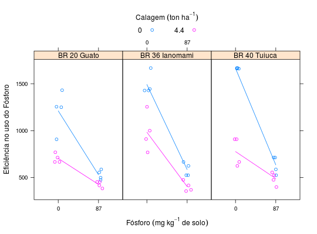

Experimento em delineamento inteiramente casualizado que avaliou o efeito a eficiência na utilização de fósforo por três cultivares de trigo cultivadas em solo com e sem calagem.
Um data.frame com 48 observações e 5 variáveis, em que
cultcalagPrepteficBANZATTO; KRONKA (2013), Quadro 5.3.7, pág. 120.
library(lattice) data(BanzattoQd5.3.7)#> Warning: data set ‘BanzattoQd5.3.7’ not foundaddmargins(with(BanzattoQd5.3.7, tapply(X = efic, INDEX = list(interaction(cult, calag, P), rept), FUN = sum)))#> 1 2 3 4 Sum #> BR 20 Guato.0.0 1255 1250 908 1431 4844 #> BR 36 Ianomami.0.0 1428 1444 1667 1428 5967 #> BR 40 Tuiuca.0.0 1660 1662 1667 1667 6656 #> BR 20 Guato.4.4.0 714 770 667 667 2818 #> BR 36 Ianomami.4.4.0 769 911 1000 1254 3934 #> BR 40 Tuiuca.4.4.0 625 909 909 667 3110 #> BR 20 Guato.0.87 556 476 588 500 2120 #> BR 36 Ianomami.0.87 625 526 667 526 2344 #> BR 40 Tuiuca.0.87 526 714 588 714 2542 #> BR 20 Guato.4.4.87 417 454 454 385 1710 #> BR 36 Ianomami.4.4.87 370 476 417 357 1620 #> BR 40 Tuiuca.4.4.87 526 556 400 476 1958 #> Sum 9471 10148 9932 10072 39623xyplot(efic ~ factor(P) | cult, data = BanzattoQd5.3.7, groups = calag, type = c("p", "a"), layout = c(NA, 1), jitter.x = TRUE, auto.key = list(title = expression("Calagem"~(ton~ha^{-1})), cex.title = 1, columns = 2), xlab = expression("Fósforo"~(mg~kg^{-1}~de~solo)), ylab = expression("Eficiência no uso do Fósforo"))